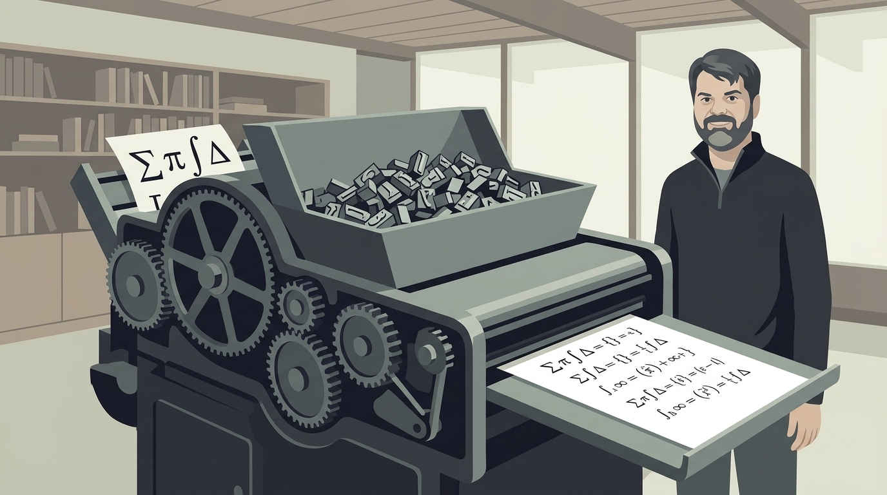
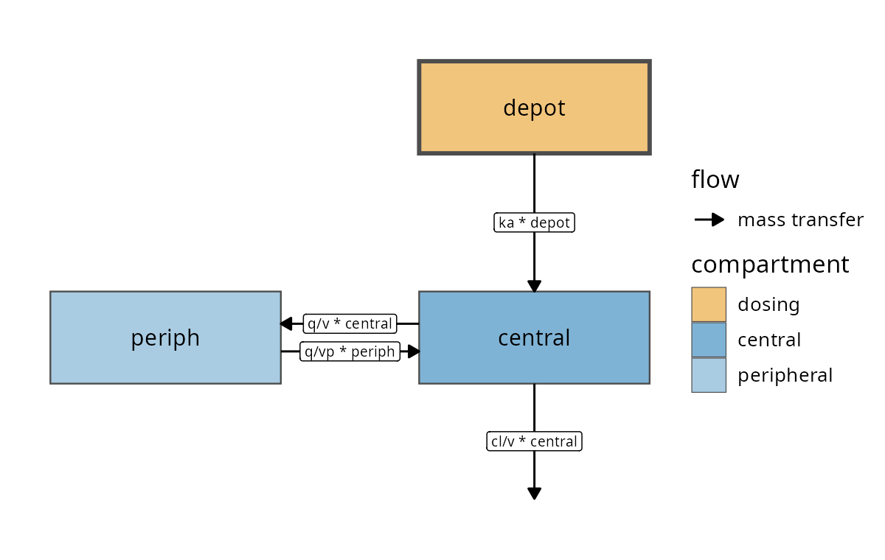
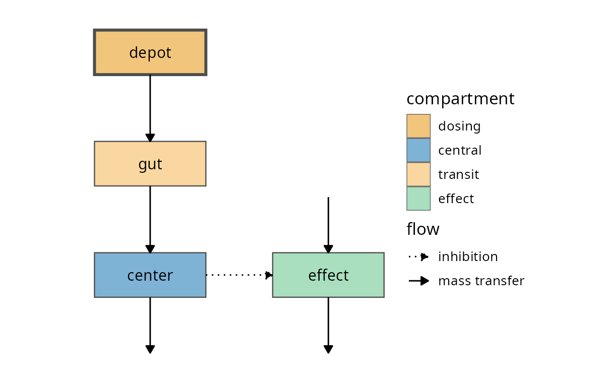
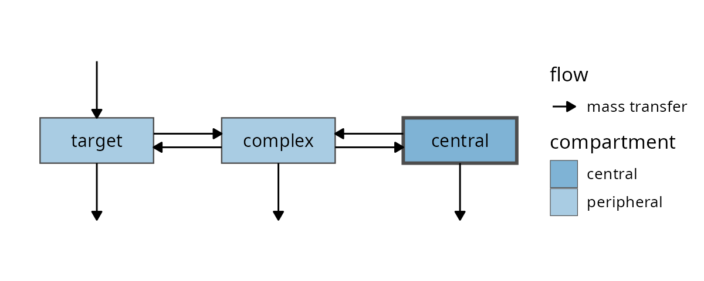
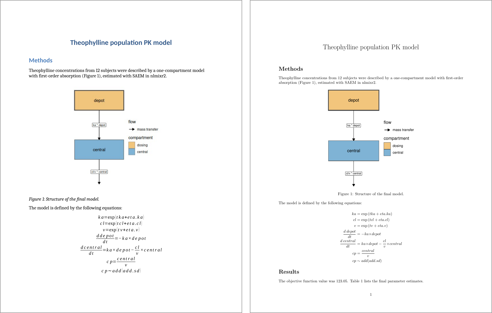
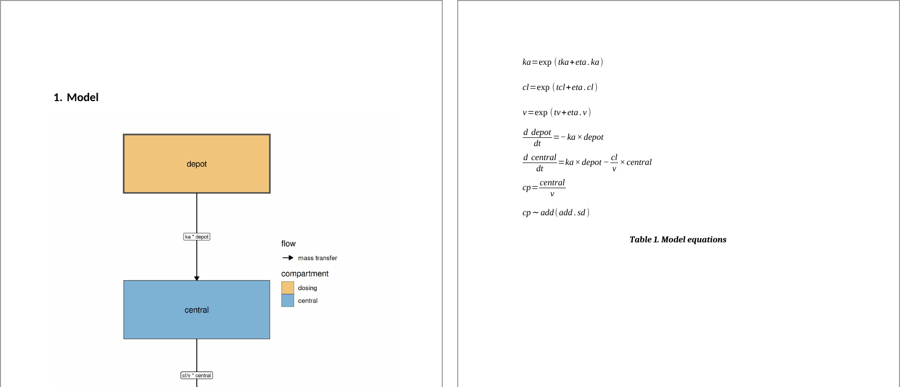

The figure and the math in your report should never disagree with the model you ran
On behalf of the nlmixr2 team

library(nlmixr2plot)
modelDiagram(two.cmt,
engine = "ggplot2",
labels = TRUE)
DCP <- center/v
PD <- 1 - emax*DCP/(ec50 + DCP)
kin <- e0*kout
d/dt(depot) <- -ktr*depot
d/dt(gut) <- ktr*depot - ka*gut
d/dt(center) <- ka*gut - cl/v*center
d/dt(effect) <- kin*PD - kout*effectPD falls as center rises, so the arrow is an inhibitiongut is recognized as a transit compartment

d/dt(central) <- -kel*central - kon*central*target + koff*complex
d/dt(target) <- ksyn - kdeg*target - kon*central*target + koff*complex
d/dt(complex) <- kon*central*target - koff*complex - kint*complexChecked against all 3043 models in nlmixr2lib, including large QSP and PBPK models
engine = |
returns | use it for |
|---|---|---|
"ggplot2" |
a ggplot object |
Word and PDF reports; theme it, ggsave() it, combine it with other plots |
"DiagrammeR" |
an interactive Graphviz widget | HTML reports and dashboards (the default when installed) |
"dot" |
Graphviz DOT source text | hand-tuning the last 5% of a layout |
modelGraph() returns the parsed compartments and flows as data frames, to check how the equations were read
library(nlmixr2extra)
rxode2::rxode2(two.cmt)knit_print() method in nlmixr2extranlmixr2 fitsprint() still gives the R code\[ \begin{aligned} {ka} & = \exp\left({tka}+{eta.ka}\right) \\ {cl} & = \exp\left({tcl}+{eta.cl}\right) \\ {v} & = \exp\left({tv}\right) \\ {q} & = \exp\left({tq}\right) \\ {vp} & = \exp\left({tvp}\right) \\ \frac{d \: depot}{dt} & = -{ka} {\times} {depot} \\ \frac{d \: central}{dt} & = {ka} {\times} {depot}-\frac{{cl}}{{v}} {\times} {central}-\frac{{q}}{{v}} {\times} {central}+\frac{{q}}{{vp}} {\times} {periph} \\ \frac{d \: periph}{dt} & = \frac{{q}}{{v}} {\times} {central}-\frac{{q}}{{vp}} {\times} {periph} \\ {cp} & = \frac{{central}}{{v}} \\ {cp} & \sim add({add.sd}) \end{aligned} \]
model({
if (SEX == 1) {
cl <- exp(tcl) * 0.8
} else {
cl <- exp(tcl)
}
v <- exp(tv)
cp <- linCmt()
cp ~ add(add.sd)
})The model() block of covmod, printed with rxode2::rxode2(covmod)
\[ \begin{aligned} \mathrm{if} & \left({SEX}{\equiv}{1}\right) \{ \\ & {cl} = \exp\left({tcl}\right) {\times} {0.8} \\ \} \quad & \mathrm{else} \: {cl} = \exp\left({tcl}\right) \\ {v} & = \exp\left({tv}\right) \\ {cp} & = linCmt() \\ {cp} & \sim add({add.sd}) \end{aligned} \]
Variable names are the symbols: eta.cl stays \({eta.cl}\), so name them well
align* blockmodelEquations <- function(x) {
eq <- knitr::knit_print(x)
if (knitr::pandoc_to("docx")) {
# centered lines: LibreOffice
# garbles aligned Word math
eq <- gsub("(?<!\\\\)&", "", eq, perl = TRUE)
}
eq <- sub("\\begin{align*}", "$$\n\\begin{aligned}",
eq, fixed = TRUE)
eq <- sub("\\end{align*}", "\\end{aligned}\n$$",
eq, fixed = TRUE)
knitr::asis_output(eq)
}\begin{align*}: silently dropped from .docx$$\begin{aligned}…$$: a native, editable Word equationengine = "ggplot2", a static image every format can embed
rmarkdown::render("model-report.Rmd", output_format = "all")figures:
model_diagram:
caption: "Model structure"
cmd: |-
p_res <- nlmixr2plot::modelDiagram(
fit, engine = "ggplot2",
labels = TRUE)
tables:
model_equations:
caption: "Model equations"
cmd: |-
t_res <- list(ft = list(
modelEquationTable(fit, obnd)))Abridged: the full entries (with title: and orientation:) are in the blog post. Then list both first under docx: and pptx: content

modelEquationTable <- function(fit, obnd) {
requireNamespace("nlmixr2extra", quietly = TRUE)
eq <- as.character(knitr::knit_print(fit))
eq <- sub("^\\s*\\\\begin\\{align\\*\\}\\s*", "", eq)
eq <- sub("\\s*\\\\end\\{align\\*\\}\\s*$", "", eq)
eq <- strsplit(eq, " \\\\\n", fixed = TRUE)[[1]]
eq <- gsub("(?<!\\\\)&", "", eq, perl = TRUE)
ft <- flextable::flextable(data.frame(eq = eq))
ft <- flextable::delete_part(ft, part = "header")
ft <- flextable::border_remove(ft)
ft <- flextable::compose(ft, j = "eq",
value = flextable::as_paragraph(
flextable::as_equation(eq)))
word <- identical(obnd$rpttype, "Word")
ft <- flextable::line_spacing(ft, space = if (word) 2 else 1)
if (!word) ft <- flextable::padding(ft, padding.top = 1,
padding.bottom = 1)
flextable::width(ft, width = 6)
}tabenv_preambleas_equation() writes native, editable math in Word and PowerPointequatags package, or the cells come out blankmodelDiagram() and modelGraph(): nlmixr2plot 5.2.0knit_print() equations: nlmixr2extraSection illustrations are Gemini Nano Banana-generated artwork
nlmixr2 development team